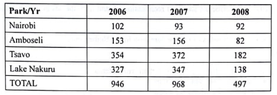
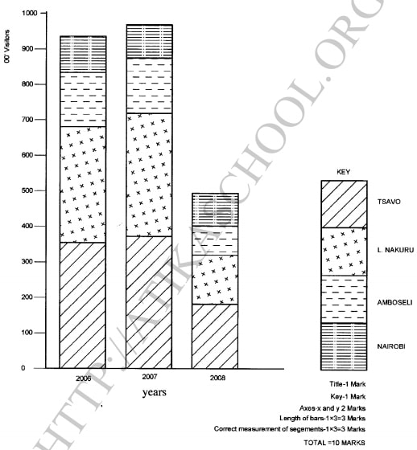

Answer all the questions in this section.
1. (a) Identify three counties in Kenya where wheat is grown on a large scale. (3 marks)
(b) State three climatic conditions that affect wheat farming. (3 marks)
2. Give the differences between softwood forests in Kenya and Canada. (4 marks)
3. (a) List three traditional methods of fishing. (3 marks)
(b) Give three similarities of fishing in Kenya and Japan. (3 marks)
4. State four disadvantages of solar energy. (4 marks)
5. (a) Name two types of water transport. (2 marks)
(b) Give three challenges facing railway transport in East Africa. (3 marks)
Answer question 6 and any other Iwo questions from this section.
6. The table below shows the number of visitors in '000 to selected national parks in Kenya for the years 2006 to 2008. Use it to answer the questions that follow.
(a) (i) What is the difference in the number of visitors who visited the parks in 2006 and those in 2008. (2 marks)
(ii) Calculate the percentage increase in the number of visitors who visited Lake Nakuru National Park between 2006 and 2007. (2 marks)
(b) (i) Draw a compound bar graph to represent the number of visitors to selected national parks in Kenya. Use the scale of 1 cm to represent 100,000 visitors.
(10 marks)
(ii) State three advantages of using compound bar graphs to represent geographical data. (3 marks)
(c) Explain four problems associated with tourism in Kenya. (8 marks)
7. (a) (i) What is beef farming? (2 marks)
(ii) Identify five factors that favour beef farming in Kenya. (5 marks)
(b) State six features of nomadic pastoralism in Kenya. (6 marks)
(c) Give reasons why beef production is higher in Argentina than Kenya. (6 marks)
(d) Explain the role played by beef farming to the economy of Kenya. (6 marks)
8. (a) Apart from irrigation, give four methods of land reclamation in Kenya. (4 marks)
(b) Explain four physical factors which influenced the location of Mwea irrigation (8 marks)
(c) (1) Name three crops grown in the polders in Netherlands.
(3 marks)
(ii) Describe the stages of reclamation of land from the sea in the Netherlands. (6 marks)
(d) State four benefits of land reclamation in the Netherlands.
9. (a) Explain the following types of settlement patterns
• Nucleated settlement pattern
(b) State four problems facing the city of Nairobi. (4 marks)
(c) State factors which led to the growth of Kisumu as a lake Port. (7 marks)
(d) Explain four ways in which the Port of Mombasa differs from Roterdam Port. (8 marks)
10. (a) Define the term environmental management. (2 marks)
(b) (i) Name two areas in Kenya that are prone to lightening. (2 marks)
(ii) State four problems caused by lightening. (4 marks)
(iii) Explain three ways in which the menace of pests can be controlled in Kenya.
(c) Give the measures that the government of Kenya has taken to conserve the environment.(6 marks)
(d) Your class intends to carry out a field study in the limestone mining areas.(6 marks)
(i) Identify two types of pollution that they may observe. (2 marks)
SECTION A (30 marks)
Answer all the questions in this section.
1. (a) Identify three counties in Kenya where wheat is grown on a large scale. (3 marks)
- Narok
- Nakuru
- Uasin Gishu
- Nyandarua
- Meru
- Laikipia
- Transzoia
- Elgeyo Marakweti
(b) State three climatic conditions that affect wheat farming. (3 marks)
- Frost
- Drought/Unreliable rainfall/very heavy rainfall
- Prolonged cold/hot seasons/high temperatures
- Strong winds which cause soil erosion Hailstones.
2. Give the differences between softwood forests in Kenya and Canada. (4 marks)
- Canada's softwood forests are mainly natural whereas Kenya's softwood are planted.
- In Kenya softwood forests are found in the highlands while in Canada softwood forests are found in both highland and lowland areas.
- In Canada softwood forests cover large tracts of land while in Kenya softwood forests cover a smaller area.
- In Kenya softwoods mature faster than those in Canada.
- Kenya has a low variety of softwoods while Canada has a wider variety.
3. (a) List three traditional methods of fishing. (3 marks)
- Basket method
- Spear / arrow/harpooning
- Use of barriers/traps
- Use of herbs Gill nets Hook and line
- Use of lamp and net/lampara
(b) Give three similarities of fishing in Kenya and Japan. (3 marks)
- In both countries fresh water and marine fishing are practiced.
- Inshore marine fishing is practiced in both countries,
- Both countries practice fish farming.
- Overfishing is a problem in both countries.
- Both use fish as a raw material
- Both use modem fishing technology
- Both consume fish locally and export.
- In both countries fishing is supported by the government.
4. State four disadvantages of solar energy. (4 marks)
- panels are expensive to manufacture.
- Low energy production.
- Solar batteries are cumbersome.
- Solar energy has limited use.
- Solar technology is new hence used by few people.
5. (a) Name two types of water transport. (2 marks)
- Inland/river/lakes /canals/ waterways
- Oceanic/marine/sea
(b) Give three challenges facing railway transport in East Africa. (3 marks)
- Competition from other means of transport
-High cost of railway network
-maintenance/inadequate capital to establish/expand railway network/purchase trains.
- Mismanagement of rail services.
- Use of different railway gauge makes interconnectivity difficult.
- Vandalism /uprooting of railway line

(a) (i) What is the difference in the number of visitors who visited the parks in 2006 and those in 2008. (2 marks)
936000-494000
=442000
(ii) Calculate the percentage increase in the number of visitors who visited Lake Nakuru National Park between 2006 and 2007. (2 marks)
347000-327000
=20000
20/327000x100
=6.11%
(b) (i) Draw a compound bar graph to represent the number of visitors to selected national parks in Kenya. Use the scale of 1 cm to represent 100,000 visitors.
(10 marks)

(ii) State three advantages of using compound bar graphs to represent geographical data. (3 marks)
- They give clear visual impression.
- They allow easy comparison.
- They are easy to interpret/read.
- They can be used to represent a wide range of data/varibles.
(c) Explain four problems associated with tourism in Kenya. (8 marks)
- It encourages environmental pollution leading to death of animals/ stroke environment degradation.
Some of the tourists are drug traffickers/introduce drugs to the youth/ people which leads to poor health thigh crime rate.
- The presence of tourists attract crimes especially those who want to rob them hence discouraging the tourists.
- Some tourists engage in immoral activities which encourages spread of sexually transmitted diseases.
- Erosion of the social/moral values of the local people who imitate foreign cultures.
- High rate of school dropouts,which leads to high illiteracy levels.
-Interference of animal way of life because of the movement of tourists in the parks.
- It encourages poaching leading to decline of wild animals
7. (a) (i) What is beef farming? (2 marks)
- It is the rearing of cattle for meat.
(ii) Identify five factors that favour beef farming in Kenya. (5 marks)
- Extensive flat land Natural grass/ pasture.
- Moderate temperatures/18-28°C/ warm-hot climate.
- Availability of watering points/sites such as swamps.
- Moderate rainfall / 500mm -999mm.
- Availability of ranching schemes to control overgrazing/pests/ diseases.
- Cultural practices/local people that practice livestock farming as their livelihood.
- Availability of marketing/ demand
(b) State six features of nomadic pastoralism in Kenya. (6 marks)
- They keep large herds of animals/many kinds of animals/ overstocking.
- They keep animals as a sign of wealth/prestige.
- Land in which the animals are kept is communially owned.
- The animals are weakened by pests and diseases/have low value! unhealthy.
- The animals are moved seasonally in search for pasture and water.
- There is uncontrolled breeding of animals.
- There is inefficient marketing system/walking for long distances to the market.
- Animals are exposed to cattle rustling/frequent raids.
- They rely on it for subsistence/ income Dwell in
(c) Give reasons why beef production is higher in Argentina than Kenya. (6 marks)
- Argentina has larger/better organized/managed ranches than in Kenya.
- Argentina has high quality cattle than Kenya.
- Argentina has better methods of animal husbandry/control of diseases/ extension services than Kenya.
- Argentina has nutritious grass/fodder/alfafa . - Argentina has pastures throughout the year due to the maritime climate.
- The ranches are well watered by wind pumps which reduces movement/weight loss in search for water.
- Argentina has more capital for intensive care/refrigeration for beef farming.
- Argentina has high advanced technology/ external market for beef.
- It has a well-developed railway/road network that transports beef cattle to the factories.
Argentina has large loca external market for beef.
(d) Explain the role played by beef farming to the economy of Kenya.
- Beef cattle provide meat/animal products for exports which earns the country foreign exchange.
- It has provided employment to many people in the slaughter houses/ butcheries/ranches improving their living standards.
- It provides raw materials to industries such as meat processing/leather industries.
- Products of beef are sold locally to earn income/improved living standards of farmers.
- (It has improved the living standards of the farmers who earn income through the sales).
- It has lead to development of roads easing transport. The government earns revenue for economy development.
8. (a) Apart from irrigation, give four methods of land reclamation in Kenya. (4 marks)
- Draining swamps.
- Improving soil through the use of manure and fertilizer.
-Controlling soil erosion.
- By afforestation Through controlling pests
(b) Explain four physical factors which influenced the location of Mwea irrigation (8 marks)
- Availability of extensive land which enables expansion of growth of rice.
- Warm climatic conditions/ high temperature suitable for growth of rice.
- Presence of river Nyamindi and Thiba/ murubara which provide water for irrigation throughout the year.
- The area is gently sloping which allows mechanization flow of water by gravity.
- Presence of black cotton/ clay soil which is suitable for rice cultivation/water retention.
- The low unreliable rainfall making irrigation the only alternative.
(c) (1) Name three crops grown in the polders in Netherlands. (3 marks)
- Rye
- Wheat
- Vegetables
- Fruits
- Barley
- Potatoes
- Oats
- Beetroots
- Flowers
- Sugar
-beet.
(ii) Describe the stages of reclamation of land from the sea in the Netherlands. (6 marks)
- Protective dykes/sea walls constructed to enclose the part of the sea which is to be reclaimed.
- Ring canals are constructed on the interior sides of the dykes to carry away excess water.
- Pumping stations are installed to pump water from enclosed area. Water is pumped out of the area enclosed by the dyke.
- Reeds are planted to drain excess water and use up the excess salt.
- Drainage ditches and more pumping stations are put on the land being reclaimed.
- Drainage pipes are laid below the soil.
- Inner dykes and ring canals are used to divide area into regular portions.
- Soils are treated with chemicals to lower salinity.
- The drained land is flushed with fresh water to remove salt from the soil. Water is pumped from the polders regularly to avoid its accumulation in the reclaimed land.
(d) State four benefits of land reclamation in the Netherlands.
- Reclamation has created more land for agriculture/settlement.
- Reclaimed land has improved agricultural output.
- Land reclamation has resulted in improved fresh water supply for domestic/industrial use.
- Construction of dykes around the polder has helped control floods/sea invasion.
- Construction of dykes / canals has improved transport network.
- Reclamation has created sceneries for tourists' attractions.
- Reclamatq
ion and associated activities have created job opportunities.
9.a) Explain the following types of settlement patterns
Dispersed settlement pattern
- Dwellings/structures are scattered The dwellings may be separated from one another by physical features The dwellings are found a distance apart.
- Nucleated settlement pattern - The houses, shops and other buildings are close to each other/ in one place.
(2 marks)
(b) State four problems facing the city of Nairobi. (4 marks)
- High rate of unemployment
- Shortage of housing
- Inadequate social amenities such as schools, water , health services and recreation facilities.
- Traffic congestion during rush hours.
- Increased crime rate.
- Increased noise/ land/ air pollution.
- Development of slums/unplanned settlement.
- Street families.
(c) State factors which led to the growth of Kisumu as a lake Port. (7 marks)
- Early settlement by Asians led to commercial development of the town.
- It is strategically located on the shores of Lake Victoria.
- It is surrounded by areas with dense population which provide labour/market.
- It has ample water supply from Lake Victoria for industrial/ domestic use.
- It has well developed transport systems/railway/roads/air port.
- It is the headquarters of Kisumu County/Nyanza region.. It has a rich agricultural hinterland which provides raw materials for industries.
- It has many industries.
- Fishing activities in lake Victoria. It is theterminus for the kenya / Uganda railway.
(d) Explain four ways in which the Port of Mombasa differs from Roterdam Port. (8 marks)
- Rotterdam uses advanced technology in cargo handling while Mombasa has low technology.
- Mombasa experiences tropical climate while Rotterdam experiences cool temperate climate.
- Rotterdam handles a large volume of cargo while Mombasa handles less cargo/ Rotterdam has a large number of berths while Mombasa has few berths.
- Mombasa exports mainly agricultural raw materials while Rotterdam exports manufactured goods from her hinterland.
- Mombasa depends on road, railway, air and pipeline transport system while Rotterdam has in addition, river and canal transport.
10. (a) Define the term environmental management. (2 marks)
- It is effective planning and control of the processes and activities that could cause the deterioration of the environment/improving resources in the environment.
(b) (i) Name two areas in Kenya that are prone to lightening. (2 marks)
- The Lake Victoria region/Kisumu/Siaya/Homabay/Migori West of the RiftValley/Westpokot/Kakamega/Vihiga/Busia/ liungoma.
The highlands of Kisii, Kericho and Nandi, Nyamira, Uasin Gishu, Bomet.
(ii) State four problems caused by lightening. (4 marks)
- It has killed many people/ animals.
- It has destroyed property /buildings / trees
- It causes fires that may destroy vegetation
-It has interrupted electricity cause power failures.
- It has interrupted communication
(iii) Explain three ways in which the menace of pests can be controlled in Kenya.
- Use of chemicals/herbicides/fungicides/pesticides/insectcides to control/kill the pests.
- Developing plant species that are resistant to pests and diseases.
- Use of biological control measures such as breeding sterile male which does not allow breeding of some pests such as tsetse fly/organisms that destroy undesirable pests are introduced.
- Development of improved / effective alternative pesticides to kill resistance pests.
- Education on proper use of chemicals to control pests and diseases.
- Clearing the vegetation that is habitat for pests.
(c) Give the measures that the government of Kenya has taken to conserve the environment.(6 marks)
- Making legislative laws that govern environmental management and conservation.
- Setting up organizations, such as Green Belt Movement / NEMA to protect the environment.
- Creating public awareness through mass media/seminars/ education on the need to conserve the environment Research on various aspects of conserving the environment in institutions such as KARI/ICIPE
- Setting up of recycling plants for recycling waste materials to protect the environment and keep it clean.
- Signing international agreement / protocols to reduce green house gases emission effects to protect the environment from pollution.
- Rehabilitation of derelict land Reafforestation / afforestation.
- Encouraging use of modern energy saving technologies such Eco- jikos.
(d) Your class intends to carry out a field study in the limestone mining areas.(6 marks)
(i) Identify two types of pollution that they may observe. (2 marks)
- Water pollution
- Air pollution Soil/ land pollution
- Noise / sound pollution.
(ii) What problems are they likely to encounter during the study? (3 marks)
- Loud noise from the excavators Difficult terrain with heaps and deep pits to walk through
- Accidents may occur/injuries.
- Hot weather leading to fatigue.
- Insect/ snake bites Dusty conditions /toxic gases Dishonest / unco-operative